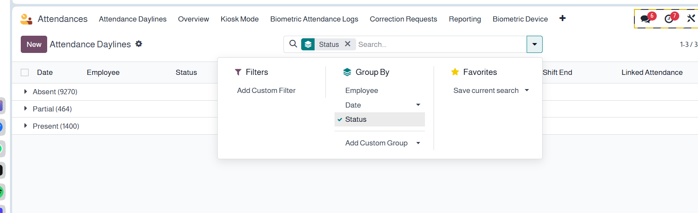

Compatibility
Last Updated
Build daily daylines for every employee and shift to classify days as Present, Partial, or Absent with late/early KPIs. Includes an hourly cron for “Yesterday”, plus a one-click rebuild of the last 365 days. Timezone-aware and shift-aware.
Key Features
🕒 Yesterday Cron (Hourly)A scheduled action runs every hour to compute yesterday’s daylines safely with retries. |
📅 Rebuild 365 DaysManual button to (re)generate the last 365 days for all or selected employees. |
⏱ Shift-Aware KPIsLate minutes, early checkout, expected vs. attended minutes per shift window. |
🌍 Timezone SmartComputes by user/company timezone (default Asia/Riyadh) for accurate “day” boundaries. |
👤 HR Smart ButtonOn employee form: open daylines; quick counter for absent days (last 30d). |
📊 Reporting-ReadyTree/Pivot/Graph views for department, employee, and date analytics. |
Absence Showcase (static example for Apps page)
Total Absentin the selected period 18
|
Unique Employeesaffected 11
|
Top Departmentabsences count Operations — 7
|
| ● Absent ● Partial ● Present |
|
👤
Ahmed Saleh — OperationsDate: 2025-09-19 • Shift: 08:00 → 17:00 Absent Expected 540 • Attended 0 Notes: no check-in detected. |
👤
Noura Al-Harbi — FinanceDate: 2025-09-19 • Shift: 09:00 → 17:00 Partial Expected 480 • Attended 190 • Late 55 Notes: traffic delay. |
👤
Yousef Khan — ITDate: 2025-09-19 • Shift: 07:00 → 15:00 Present Expected 480 • Attended 482 Notes: on time. |
|
👤
Maha Al-Qahtani — HRDate: 2025-09-18 • Shift: 08:00 → 17:00 Absent Expected 540 • Attended 0 Notes: sick leave not submitted. |
👤
Omar Al-Ghamdi — SalesDate: 2025-09-18 • Shift: 09:00 → 17:00 Partial Expected 480 • Attended 210 • Early 70 Notes: client visit. |
👤
Sara Murad — OpsDate: 2025-09-18 • Shift: 07:00 → 15:00 Present Expected 480 • Attended 485 Notes: +5 min OT. |
يوفّر هذا الموديول إنشاء سجلات يومية للحضور لكل موظف بحسب نوبات العمل، ويحدّد اليوم كـ حاضر أو جزئي أو غائب مع احتساب الدقائق المتأخرة والخروج المبكر. يتضمن مجدولًا كل ساعة لحساب “أمس”، وزرًا يدويًا لإعادة بناء آخر 365 يومًا.
هل ينشئ حضور/انصراف تلقائيًا؟
لا يغيّر سجلات HR Attendance، لكنه يقرأها ليبني يوميات (Daylines) وتقارير غياب/تأخر.
كيف تُحسب “جزئي”؟
إذا كانت الدقائق المحسوبة أقل من نسبة محددة (افتراضيًا 50%) من دقائق النوبة المتوقعة.
ماذا عن المناطق الزمنية؟
الحساب يجري حسب المنطقة الزمنية للمستخدم/الشركة (الافتراضي Asia/Riyadh).
Contact us for assistance, custom rules, or advanced reporting.
Email Support